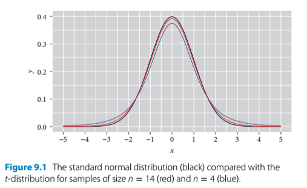
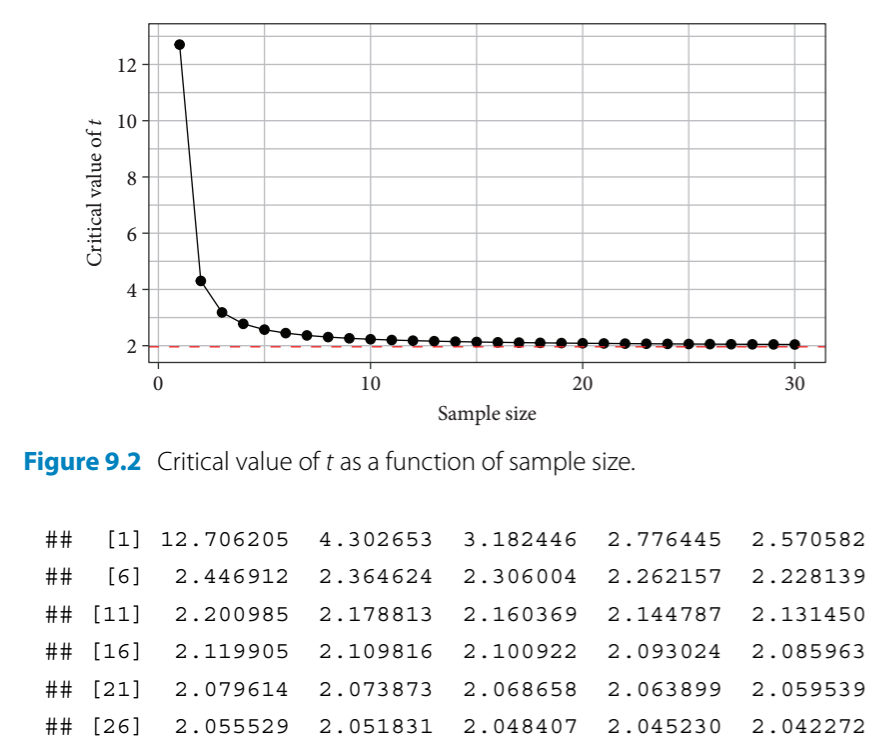

9 Testing
9.1 Significance testing: Time for t
- Statisticians think that the overfixation on p-values has contributed to the reproducibility crisis in science
- That’s why the author’s focus of this text is on estimation, which relies on estimates and confidence intervals
- This chapter introduces the Student’s t-test which will generate a p-value
install.packages("arm", repos = "https://cran.us.r-project.org")
install.packages("ggplot2", repos = "https://cran.us.r-project.org")
install.packages("Sleuth2", repos = "https://cran.us.r-project.org")
install.packages("SMPracticals", repos = "https://cran.us.r-project.org")9.2 Student’s t-test: Darwin’s maize
- The Student’s t-test
- Uses the t-distribution
- This is like a small sample size version of the normal distribution
- There are two basic forms a t-test can take:
- The one sample t-test takes the mean of a sample and compares it with a null hypothesis of zero
- The two sample t-test compares the difference between the means of two samples against a null a hypothesis of no difference (zero)
- The paired two sample t-test is a subtype that applies when the values of two samples come in pairs (like in the darwin maize data)
- R has a function for the t-test but the author tends to avoid it. Criticism from the author about the default R t-test:
- the parts of the t-test include:
- a difference
- its standard error (and the CI used to calculate it)
- the observed value of t
- the critical value of t
- the degrees of freedom
- the P-value
- the default R t-test output is poorly ordered and missing some of this information
- the default is not the classic t-test but another variant called Welch’s
- Welch’s might be good for research since it doesn’t assume equal variance though
- but adds another twist so it’s not appropriate for teaching beginners
- the parts of the t-test include:
- Uses the t-distribution
- the general form of a t-test is:
- \(observed \;t = \frac{difference}{SE}\)
- this is a more formal version of what was done in earlier chapters in which the output of the display() function - the estimates and the standard errors were compared
- as a rule of thumb/eyeball test, the estimate should be twice as large as its standard error to reject the null hypothesis at the lowest level of confidence (95%) and three times as large for the next level (99% CI) and so on
- when sample sizes are larger, t converges to the normal distribution
- when sample sizes are smaller, the t distribution is shorter and wider than normal

- two t values of the t-test:
- critical t value - sets the bar for comparison - this is the minimum t value required to achieve a given level of significance (P = 0.05, 0.01, etc.)
- observed t value - calculated by dividing the estimate by its standard error
- if the observed t value is larger than the critical t value, then the result is declared significant at that level

- For performing a paired t-test with darwin’s maize data, the observed t value must be compared to the critical value with the corresponding critical t value for the sample size that Darwin had (\(n = 15 \;pairs\))
Calculate the critical t value when P = 0.05 and n = 15 pairs:
qt(0.975, df = 14) #mean + 2SEs; 0.975 is the upper CI limit for a 95% CI
#> [1] 2.144787Summarize the model for a version of the maize data that omits the pairing aspect (for standard two sample t-test):
summary(
lm(height ~ type, data = darwin)) #this linear model omits the pairing aspect
#>
#> Call:
#> lm(formula = height ~ type, data = darwin)
#>
#> Residuals:
#> Min 1Q Median 3Q Max
#> -8.1917 -1.0729 0.8042 1.9021 3.3083
#>
#> Coefficients:
#> Estimate Std. Error t value Pr(>|t|)
#> (Intercept) 20.1917 0.7592 26.596 <2e-16 ***
#> typeSelf -2.6167 1.0737 -2.437 0.0214 *
#> ---
#> Signif. codes:
#> 0 '***' 0.001 '**' 0.01 '*' 0.05 '.' 0.1 ' ' 1
#>
#> Residual standard error: 2.94 on 28 degrees of freedom
#> Multiple R-squared: 0.175, Adjusted R-squared: 0.1455
#> F-statistic: 5.94 on 1 and 28 DF, p-value: 0.02141-
summary()takeaways:- The second row of the coefficients table tests the null hypothesis by comparing the observed difference in height between progeny of selfed and cross pollinated plants (-2.6167)
- The first row tests the mean height of the cross pollinated plants versus a null hypothesis of an average height of zero
- This was not a comparison we intended to make in advance or really at all
- It can be beneficial to specify only the tests we want to have run even if it means more typing
- The average difference in height is -2.6167 and its standard error of the difference is 1.0737
This produces an observed t value of:
-2.6167/1.0737 #difference/standard error of the difference
#> [1] -2.437087- critical t value for this data is 2.144787
- observed t value for the data is -2.437087
It is better/more informative to work with CIs:
confint(lm(height ~ type, data = darwin))
#> 2.5 % 97.5 %
#> (Intercept) 18.63651 21.7468231
#> typeSelf -4.81599 -0.4173433- Again, this 95% CI does not encompass 0; therefore, the null hypothesis can be rejected at this level
- In the previous
summary()chunk, the standard two sample t-test was performed without factoring in the pairing
Generate table of coefficients for a paired t-test:
summary(lm(height ~ type + pair, data = darwin))
#>
#> Call:
#> lm(formula = height ~ type + pair, data = darwin)
#>
#> Residuals:
#> Min 1Q Median 3Q Max
#> -5.4958 -0.9021 0.0000 0.9021 5.4958
#>
#> Coefficients:
#> Estimate Std. Error t value Pr(>|t|)
#> (Intercept) 21.7458 2.4364 8.925 3.75e-07 ***
#> typeSelf -2.6167 1.2182 -2.148 0.0497 *
#> pair2 -4.2500 3.3362 -1.274 0.2234
#> pair3 0.0625 3.3362 0.019 0.9853
#> pair4 0.5625 3.3362 0.169 0.8685
#> pair5 -1.6875 3.3362 -0.506 0.6209
#> pair6 -0.3750 3.3362 -0.112 0.9121
#> pair7 -0.0625 3.3362 -0.019 0.9853
#> pair8 -2.6250 3.3362 -0.787 0.4445
#> pair9 -3.0625 3.3362 -0.918 0.3742
#> pair10 -0.6250 3.3362 -0.187 0.8541
#> pair11 -0.6875 3.3362 -0.206 0.8397
#> pair12 -0.9375 3.3362 -0.281 0.7828
#> pair13 -3.0000 3.3362 -0.899 0.3837
#> pair14 -1.1875 3.3362 -0.356 0.7272
#> pair15 -5.4375 3.3362 -1.630 0.1254
#> ---
#> Signif. codes:
#> 0 '***' 0.001 '**' 0.01 '*' 0.05 '.' 0.1 ' ' 1
#>
#> Residual standard error: 3.336 on 14 degrees of freedom
#> Multiple R-squared: 0.469, Adjusted R-squared: -0.09997
#> F-statistic: 0.8243 on 15 and 14 DF, p-value: 0.6434- New table of coefficients output:
- Takes the crossed plant from pair 1 as the intercept
- Shows the mean difference in height of the crossed plants (-2.6167)
- Then shows the average difference of each pair relative to pair 1
- Ignore these differences of pairs and see that the second row gives us the t value for the paired t-test:
-2.6167/1.2182
#> [1] -2.148005- This is the observed t value, which is way smaller than the critical t value (2.144787)
- This finding corresponds to the large p value in the table which is 0.6434
We can use a the linear model function to perform the equivalent of a one-sample t test: - generate a single sample of differences:
ex0428$Difference <- ex0428$Cross - ex0428$SelfFit a linear model that only estimates the mean difference:
summary(lm(Difference ~1, #the 1 indicates the intercept, which is the mean of a single sample of differences
data = ex0428))
#>
#> Call:
#> lm(formula = Difference ~ 1, data = ex0428)
#>
#> Residuals:
#> Min 1Q Median 3Q Max
#> -10.9917 -1.2417 0.3833 3.0083 6.7583
#>
#> Coefficients:
#> Estimate Std. Error t value Pr(>|t|)
#> (Intercept) 2.617 1.218 2.148 0.0497 *
#> ---
#> Signif. codes:
#> 0 '***' 0.001 '**' 0.01 '*' 0.05 '.' 0.1 ' ' 1
#>
#> Residual standard error: 4.718 on 14 degrees of freedom9.3 Summary: statistics
- Alternate source on t-tests
- I will probably rarely if ever use a one sample t-test
- use two-tailed t-test since we don’t need to determine the direction of the difference
- use a paired t-test if the groups come from a single population
- i.e. if you are measuring gene expression in two groups of cannabis plants over time or before/after methyl jasmonate treatment
- use a two sample (unpaired) t-test if the two groups come from different populations
- i.e. comparing some feature of two varieties of P. cubensis
- if they are different, then the CI will not include 0 so the null hypothesis can be rejected